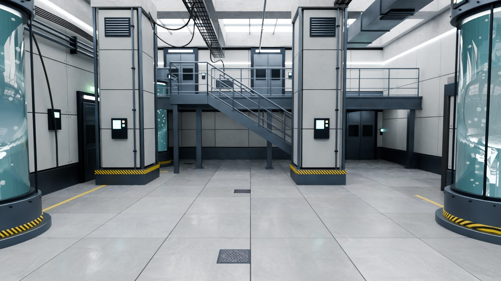
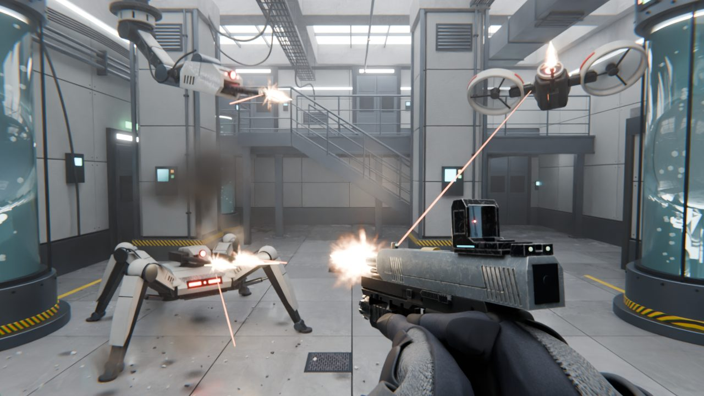
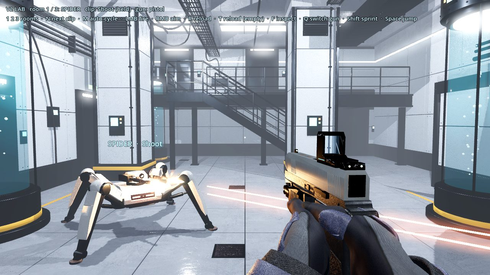
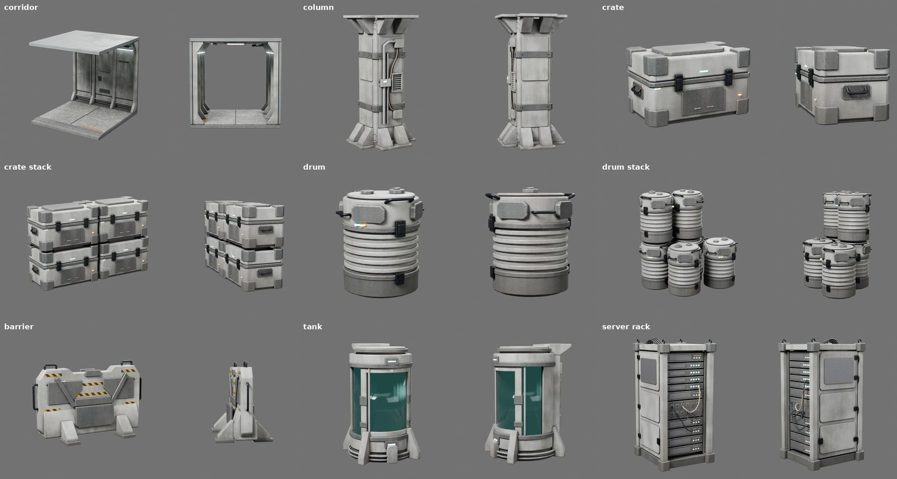
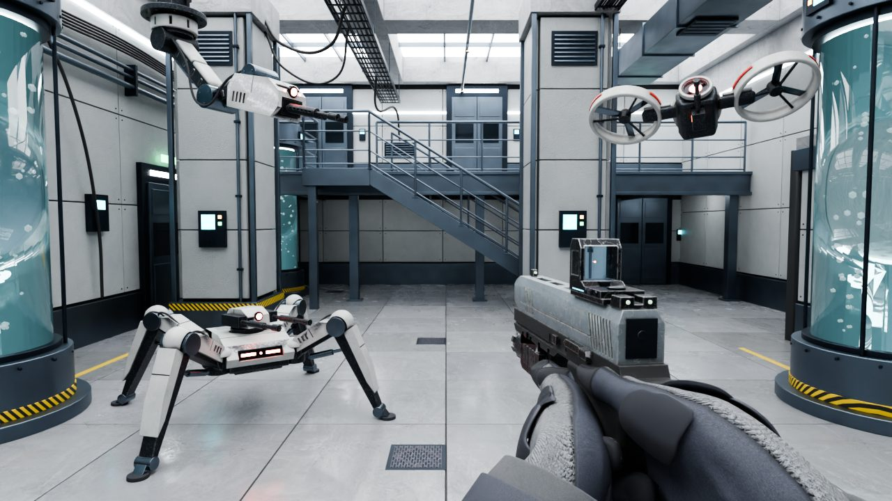
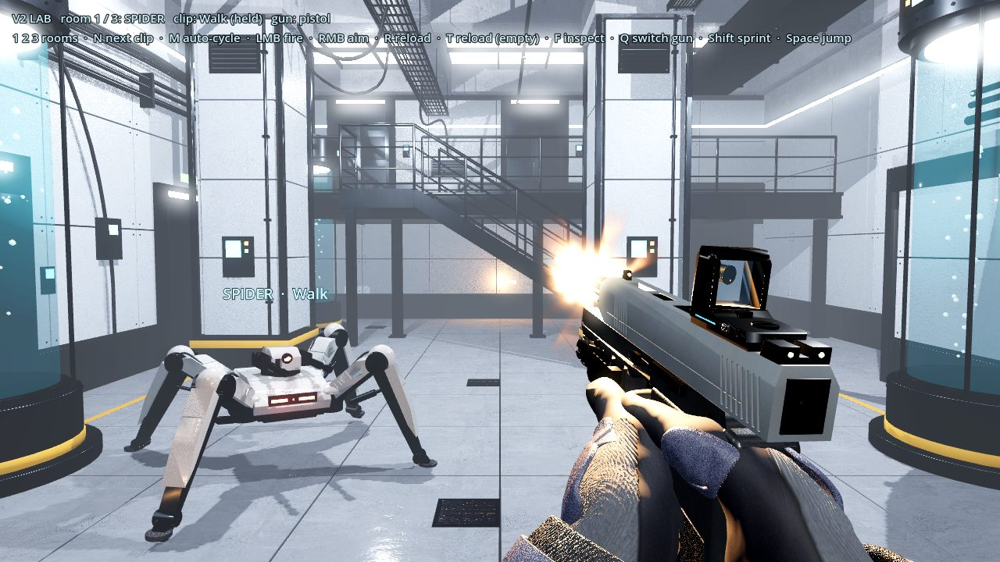

Making of
Eight days,
two versions
The whole game was built in one long conversation between its designer and Claude, working in a cloud container with Godot 4.3 and Blender 4.2. Every model is a Python script run in Blender, and the rules were checked by headless tests and bots that play whole runs.
Timeline
-
Day 1 · 10 Nov
Version 1 in a day
Scaffold, then the greybox loop: dungeon generator, controller, doors, pistol, exit portal, title and end screens, with a generator check and a bot that walks every dungeon. The same day: the neon environment kit, three enemies with telegraphs, 31 sounds, loot and difficulty, HUD and map, and a working web export.
Later that day the art direction moved to two CC0 Quaternius packs, with gloved first-person arms.
-
Day 2 · 11 Nov
Guns, hands and robots from scratch
A pistol and a rifle modelled in Blender, an armoured glove and sleeve rigged and posed on each grip, fire and reload animations; then a ceiling turret, a drone and a spider, each with idle, shoot, move and death clips, brought into the game.
-
Day 3 · 12 Nov
Version 2 starts in Blender
A graphics pass on version 1 (baked wear masks, worn-paint shader, HDRI reflections), then version 1 was frozen. Version 2 began as one detailed concept scene rendered in Cycles: the lab room, then the pistol in two gloved hands, then the three robots.

-
Day 4 · 13 Nov
Rigs and animation
Rigged arms kept in both weapon views; 8 pistol clips and 9 machine-gun clips baked with the hands re-solved on every frame; the robots put on joints and animated with broad, exaggerated motion; an effects pass and the Firefight stills. That evening, the V2 lab ran in Godot.

-
Days 5–6 · 14–15 Nov
The lab: robots that fight back
Robots as enemies that aim with their barrels, worn paint from the baked masks, colours matched to the Blender render, the gun on its own camera, crouch, reacting wrecks, the drone's spin-out, and a sound system built from real CC0 recordings mixed by loudness.

-
Day 6–7 · 15–16 Nov
Back to the design document
The game returned to the brief's loop: a generated dungeon of 8 to 12 rooms, threat scaling, a bot that plays whole runs to measure balance. The first modular kit was rejected as poorly designed; an environment set of 33 assets was modelled from 24 reference sheets and approved. The interface was rebuilt after the designer's UI concept.

-
Day 8 · 17 Nov
The first minute
A training room with a caged dummy that reacts to each hit, menu music, a run that opens out of the title's white, a gatling turret, solid wrecks to jump over, and spiders whose feet stay planted when they are shot.

From Blender to the browser
v2/scripts/), so a change is a re-run, not a hand edit.The 3D gallery reads the same glbs and the same material table, with the game's shaders ported to three.js.


The conversation
The conversation log will appear here once it has been exported.